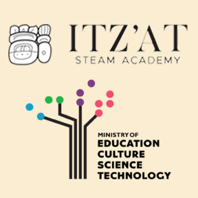

This consultancy supports the expansion of a national STEAM learning system integrating curriculum, teacher training, and innovation infrastructure aligned with Belize’s 4IR workforce priorities.
Consultancy & education
ITzat / Belize STEAM
A two-year international education initiative (2025 - 2027) led by the International Society for Music Education and France Éducation International in partnership with the Belize Ministry of Education, Science and Technology, with funding support from the Inter-American Development Bank under its Skills for the Future program. The MusEDLab serves as the primary project consultant and project manager for STEAM, assisting the project as it builds on and further develops the STEAM learning model originally developed with Massachusetts Institute of Technology. This initiative further pilots and supports a new competency-based secondary STEAM curriculum and teacher certification pathway across Belize. Our team is currently completing the national pilot of the high-school STEAM curriculum while supporting the development of regional STEAM pavilions and training teachers across the country.
Read More ...